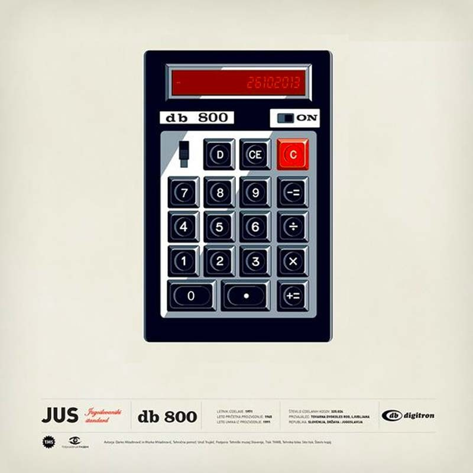
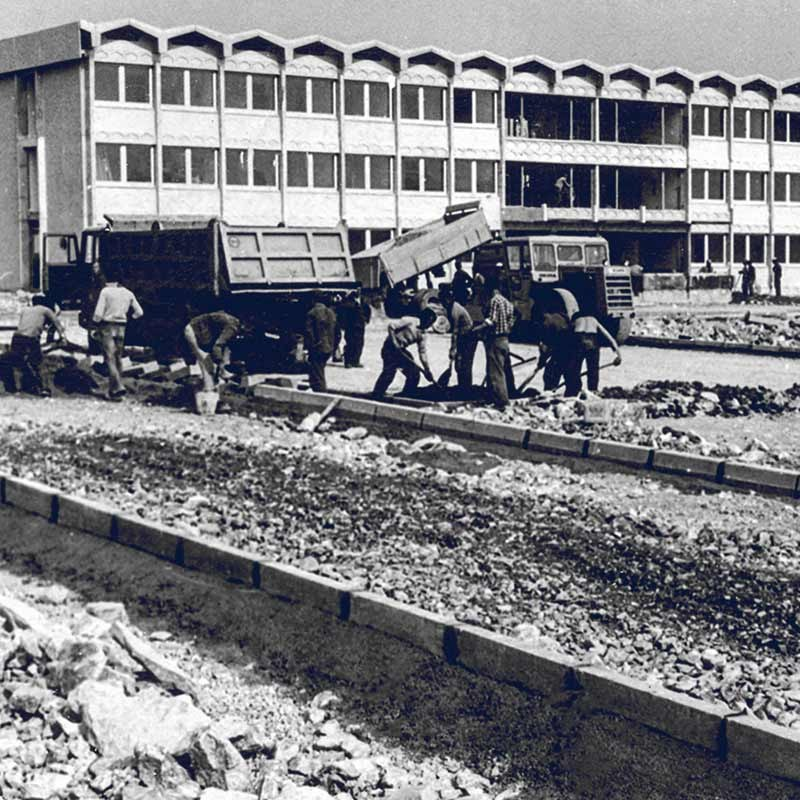
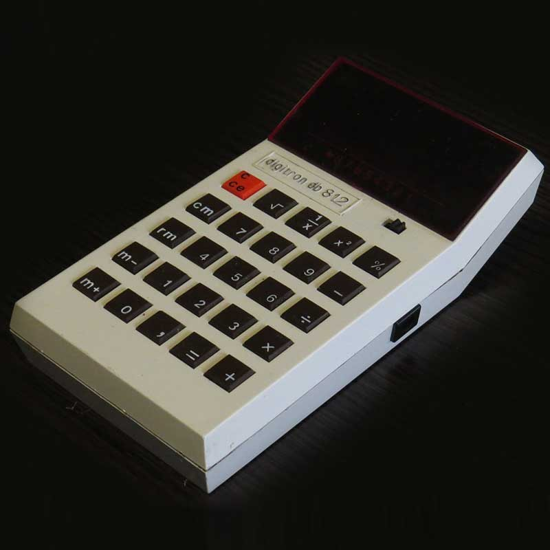

55 godina Digitrona
Od prvih džepnih kalkulatora do vaga, fiskalnih blagajni i servisa

Digitron db800
Početak koji je obilježio elektroniku
Digitron je osnovan 1971. godine u Bujama. U vrijeme kada su elektronički kalkulatori tek ulazili u svakodnevnu uporabu, tvrtka je razvila db800, prvi džepni kalkulator proizveden u Europi. U prvim godinama elektronički kalkulator bio je ozbiljna investicija. U pričama o tom razdoblju često se spominje da je cijena uređaja bila usporediva s cijenom automobila fićo.
To je bila drukčija elektronika od današnje. Komponente su bile skupe, uređaji su se izrađivali i servisirali lokalno, a proizvođač je morao razumjeti svaki dio proizvoda. Digitron je postupno širio svoju djelatnost i sa stolnih kalkulatora prelazio na blagajne, mjernu opremu, uređaje za komunikaciju i industrijsku elektroniku.
Naziv Digitron u svakodnevnom govoru postao je uobičajena riječ za kalkulator. U tome se vidi koliko su proizvodi bili prisutni u uredima, školama, trgovinama i domovima. Trebate kalkulator? Tražite digitron.
Prekretnice od 1971. do 2026
Osnivanje Digitrona u Bujama i proizvodnja kalkulatora db800
Širenje programa stolnih kalkulatora
Elektroničke registar-blagajne i teleprinteri
Mjerni pretvarači sile i vaga SKALA 02
Razvoj detektora eksploziva
Mikroprocesori u elektroničkim uređajima
Program računalnih PC komponenti
Mrežni sustavi i POS oprema
Početak programa klimatizacije
Fiskalne registar-blagajne
Uvođenje LED rasvjete u ponudu
Program grijanja na pelet
55 godina od osnivanja
Fotografije iz povijesti Digitrona

Izgradnja pogona Digitron u Bujama

Kalkulator Digitron db812
Proizvodi i servis danas
Kako su se mijenjale potrebe tržišta, mijenjao se i program Digitrona. Uz razvoj i uvoz elektroničke opreme važan dio posla postali su elektroničko vaganje, oprema za maloprodaju i održavanje uređaja. Posebno mjesto imaju trgovačke i industrijske vage te organizacija ovjere koja je potrebna za zakonitu uporabu mnogih mjernih instrumenata.
Digitron danas nudi i fiskalne blagajne, klimatizaciju, LED rasvjetu te peći na pelet. Pojedine se djelatnosti na prvi pogled razlikuju, ali imaju zajedničku potrebu: oprema mora odgovarati konkretnom poslu i nakon kupnje treba imati mogućnost tehničkog održavanja.
U Bujama djeluju prodaja i centralni servis. Kupci mogu zatražiti informacije o uređajima, dostupnosti rezervnih dijelova, servisu te pregledima i ovjeri vaga. Za svaku vrstu opreme potrebno je navesti model i uvjete primjene. To je najbolji nastavak priče započete kalkulatorima: rad s elektronikom koji se kroz desetljeća prilagođavao novim potrebama.